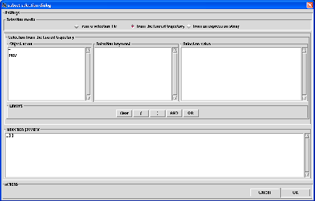

Next: selection from a selection
Up: Atom selection
Previous: Atom selection
Contents
Subset selection
This kind of selection is used when one wants to narrow an analysis on a given subset of atoms of the
system. For instance, assuming that you performed a MD of a protein in a water box and that
you are interested in calculating the diffusion constant of the protein via a Mean-Square Displacement (MSD) analysis. In that case,
it will be necessary to perform the analysis only on the atoms of the protein.
By default, nMOLDYN consider all the atoms for an analysis. The dialog from which a subset selection is performed
is displayed in figure 4.19.
Figure 4.19:
The dialog from where a subset selection is performed.
|

|
At the bottom of the dialog, the Actions frame contains the Cancel button to cancel the selection and
the OK button to validate the selecton.
On the top of the dialog, three radiobuttons allows to select from which media the selection will be performed. This can
be:
- from a selection file: this will perform the selection from a nMOLDYN subset selection file,
- from the loaded trajectory: this will perform the selection directly from the contents of the universe contained
in the loaded trajectory,
- from an expression string: this will perform the selection from a valid python expression declaring a list
of atoms to include in the selection.
When clicking on one of these radiobutton, a media-specific dialog will be displayed in the underneath frame.
Subsections
Next: selection from a selection
Up: Atom selection
Previous: Atom selection
Contents
pellegrini eric
2009-10-06